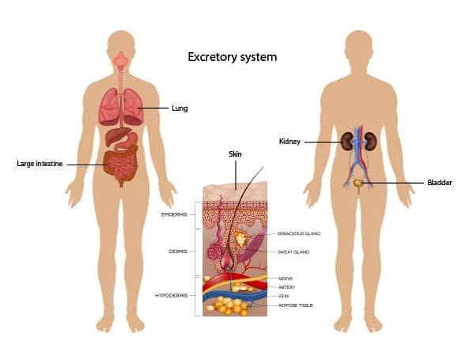

ระบบขับถ่าย

ระบบขับถ่ายมีหน้าที่กำจัดของเสียที่เกิดจากกระบวนการทำงานของเซลล์ออกจากร่างกาย รวมถึงช่วยรักษาสมดุลของน้ำ เกลือแร่ และสารต่าง ๆ ภายในร่างกายให้เหมาะสม หากร่างกายไม่สามารถกำจัดของเสียหรือควบคุมสมดุลเหล่านี้ได้ อาจส่งผลต่อการทำงานของอวัยวะและสุขภาพโดยรวมได้
อวัยวะหลักของระบบขับถ่ายปัสสาวะประกอบด้วย ไต ท่อไต กระเพาะปัสสาวะ และท่อปัสสาวะ โดยไตเป็นอวัยวะที่มีความสำคัญมากที่สุด เพราะทำหน้าที่กรองเลือดและควบคุมปริมาณน้ำและสารต่าง ๆ ในร่างกาย ภายในไตมีหน่วยไตจำนวนมาก ซึ่งทำหน้าที่กรองสารจากเลือด จากนั้นร่างกายจะดูดกลับสารที่ยังจำเป็น เช่น น้ำและสารบางชนิดกลับเข้าสู่เลือด ส่วนสารที่ไม่ต้องการจะถูกนำไปสร้างเป็นปัสสาวะ
ปัสสาวะที่สร้างขึ้นจะไหลจากไตผ่าน ท่อไต ไปเก็บไว้ในกระเพาะปัสสาวะ เมื่อกระเพาะปัสสาวะมีปัสสาวะสะสมมากขึ้น ร่างกายจะเกิดความรู้สึกปวดปัสสาวะ และปัสสาวะจะถูกขับออกนอกร่างกายผ่านทางท่อปัสสาวะ กระบวนการทำงานของไตจึงไม่ได้มีเพียงการกำจัดของเสียเท่านั้น แต่ยังช่วยควบคุมปริมาณน้ำและเกลือแร่ รวมถึงช่วยรักษาสมดุลของสภาพแวดล้อมภายในร่างกาย
นอกจากไตแล้ว อวัยวะอื่นก็มีส่วนช่วยในการขับถ่าย เช่น ปอด ที่ขับคาร์บอนไดออกไซด์และไอน้ำออกจากร่างกาย และ ผิวหนัง ที่ขับเหงื่อออกทางต่อมเหงื่อ โดยเหงื่อประกอบด้วยน้ำ เกลือแร่ และของเสียบางชนิด ดังนั้นการขับถ่ายจึงเป็นกระบวนการที่ช่วยให้ร่างกายกำจัดสิ่งที่ไม่ต้องการและรักษาสมดุลภายในให้เหมาะสมอยู่เสมอ
ภายในไตมีหน่วยทำงานที่เรียกว่า หน่วยไต ซึ่งเป็นโครงสร้างสำคัญที่ทำหน้าที่กรองเลือดและสร้างปัสสาวะ ในระหว่างกระบวนการสร้างปัสสาวะ สารต่าง ๆ จากเลือดจะถูกกรองออกมา จากนั้นสารที่ร่างกายยังต้องการ เช่น น้ำ กลูโคส และเกลือแร่บางชนิด จะถูกดูดกลับเข้าสู่กระแสเลือด ส่วนสารที่ร่างกายไม่ต้องการหรือมีปริมาณมากเกินไปจะถูกขับออกมาเป็นปัสสาวะ
ไตยังมีหน้าที่ช่วยควบคุมปริมาณน้ำและเกลือแร่ในร่างกาย หากร่างกายมีน้ำน้อย ไตจะช่วยลดการสูญเสียน้ำออกทางปัสสาวะ แต่หากร่างกายมีน้ำมากเกินไป ไตก็สามารถขับน้ำออกมาเพิ่มขึ้น กระบวนการนี้ช่วยให้ร่างกายรักษาสมดุลของน้ำและสารต่าง ๆ ให้อยู่ในระดับที่เหมาะสม นอกจากนี้ไตยังมีบทบาทในการช่วยควบคุมความดันโลหิตและสร้างฮอร์โมนบางชนิดที่เกี่ยวข้องกับการทำงานของร่างกาย
การขับถ่ายยังเกี่ยวข้องกับอวัยวะอื่น ๆ นอกเหนือจากไต โดย ปอด ทำหน้าที่ขับคาร์บอนไดออกไซด์และไอน้ำออกจากร่างกายผ่านการหายใจ ส่วน ผิวหนัง ขับเหงื่อซึ่งประกอบด้วยน้ำ เกลือแร่ และของเสียบางชนิด ขณะที่ ตับ มีบทบาทในการเปลี่ยนแปลงและกำจัดสารบางชนิด รวมถึงช่วยจัดการกับสารที่ร่างกายไม่ต้องการ ดังนั้นระบบขับถ่ายจึงไม่ได้หมายถึงการขับปัสสาวะเพียงอย่างเดียว แต่เป็นกระบวนการกำจัดของเสียหลายรูปแบบ
การทำงานของระบบขับถ่ายมีความสำคัญต่อการรักษา ดุลยภาพของร่างกาย เพราะช่วยควบคุมปริมาณน้ำ เกลือแร่ และสารต่าง ๆ ให้เหมาะสม หากระบบขับถ่ายทำงานผิดปกติ ของเสียอาจสะสมในร่างกายและส่งผลกระทบต่อการทำงานของอวัยวะต่าง ๆ ดังนั้นการดื่มน้ำอย่างเหมาะสม รับประทานอาหารที่มีประโยชน์ และดูแลสุขภาพโดยรวมจึงมีส่วนช่วยให้ระบบขับถ่ายทำงานได้อย่างมีประสิทธิภาพ